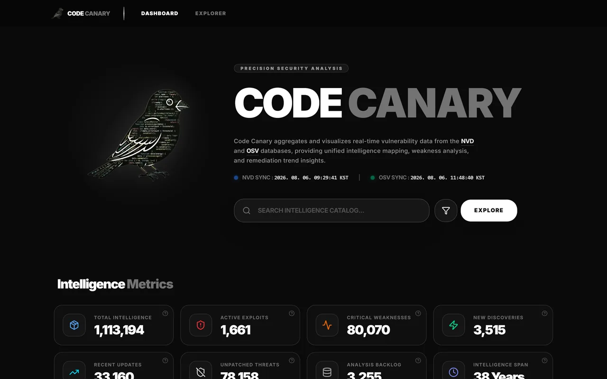

최종학력
Hyeonseok93 / README.md
안녕하세요, 김현석입니다 👋
Education
한양사이버대학교 · 학사
Antelope Valley College · Lancaster, CA
동의대학교 · 학사
Military Service
공군군수사령부
2020.09 ~ 2023.12 · 3년
제81항공정비창 계획운영과 인사장교 (중위 전역)
Training
SK Shieldus
2026.02 ~ 2026.07 · 6개월
루키즈 5기 지능형 애플리케이션 개발자 양성과정
Journey
2012 - 2026동의대학교2012.02 ~ 2017.02
휴학2015 ~ 2016
유학 준비2017 ~ 2018
AVC2018.01 ~ 2019.12
장교 준비2020
공군2020.09 ~ 2023.12
한양사이버대학교2022.02 ~ 2024.02
국립부경대학교2024.02 ~ 2026.02
루키즈2026.02 ~ 2026.07
Pinned
ARGUSRookies 최종
웹 취약점 스캔 플랫폼. 대상 서비스 API · 엔드포인트 수집과 응답 검증 (기여 85%)
FastAPI7명22일
ONDERookies 최종여행 플랫폼. 숙소 · 항공 · 렌터카 · 결제 · 어드민 프론트엔드 (기여 80%)
7명35일
Code Canary개인CVE · OSV 취약점 인텔리전스 대시보드. 대시보드와 검색 화면
Spring Boot1명52일
MACTARookies 미니실시간 경매 플랫폼. 프론트엔드 스캐폴드 · 공통 UI · API 연동 (기여 90%)
6명8일
MATERookies 미니스터디 · 프로젝트 팀 매칭 플랫폼. 회원가입 · 로그인 · 계정 찾기 (기여 100%)
6명8일
CVS Event ComparatorRookies 미니4대 편의점 행사 비교 웹. AI 챗봇 · Groq 연동과 검색 로직 (기여 70%)
Python6명5일
ICS 보안 연구
비공개 산업용 프로토콜을
언어처럼 학습해, 이상을 탐지하고 테스트합니다
핵심 기술
RoBERTa
마스크 언어 모델링(MLM)Modbus/TCP산업제어시스템(ICS)
- 문제
공장·발전소 장비의 통신 규칙은 비공개인 경우가 많아, 전문가가 패킷을 직접 분석해 탐지 규칙을 작성해야 했습니다.
- 아이디어
통신 규칙은 언어의 문법과 닮았습니다. RoBERTa가 정상 통신의 가려진 값을 예측하도록 학습시켜 문법을 스스로 익히게 합니다.
- 활용
학습한 문법에서 벗어난 통신을 탐지하면 Detect, 문법을 지키며 변형한 입력으로 테스트하면 Fuzz입니다.
공통 학습
정상 패킷의 일부를 가리고, 원래 값을 맞히며 통신 문법을 익힙니다
학술지 논문한국정보통신학회 2026
RoBERTa Quadrant Mapping 기반 ICS 이상 탐지
패킷과 로그를 함께 분석해 이상 여부와 이상 발생 위치를 동시에 판별합니다
- 공격 데이터 없이 정상 패킷·로그만으로 학습
- 통신 규격서나 수동 탐지 규칙 없이도 이상 탐지가 가능함을 보임
- 사분면으로 요청·응답 중 어느 쪽이 문제인지까지 해석
어떻게 동작하나요?
석사학위논문부경대 2026
RoBERTa 기반 ICS 프로토콜 퍼징 입력 생성 및 제어
프로토콜 형식을 지키면서 장비의 예외 동작을 유발할 수 있는 입력을 생성합니다
- 공격 패킷 없이 정상 패킷만으로 학습해 새 입력 생성
- 규격서 기반보다 서버 내부 로직을 더 깊고 다양하게 검사
- 무작위 변이보다 형식을 지키는 유효한 입력을 생성
어떻게 동작하나요?
혼자 진행한 개인 · 미니 프로젝트
Code Canary개인
CVE · OSV 취약점 인텔리전스 대시보드
- 대시보드와 검색 화면
- API · 로그인 · 관리자 콘솔
- 취약점 수집 Worker와 데이터 파이프라인
Spring BootReactPostgreSQLRedisNVD API

Mini projects 7
Shorts Alert
숏폼 시청 시간 모니터 & 알림
Repeat Music Player
구간 반복 재생 · 오디오 병합
Image Zoomer
픽셀 이미지 정밀 확대 뷰어
Monitor Coordinate System
모니터 좌표 · 거리 측정 유틸
Image Converter
이미지 일괄 변환 · 최적화
Color Picker
픽셀 돋보기 · 색상 피커
Web Score Board
보드게임용 웹 스코어보드